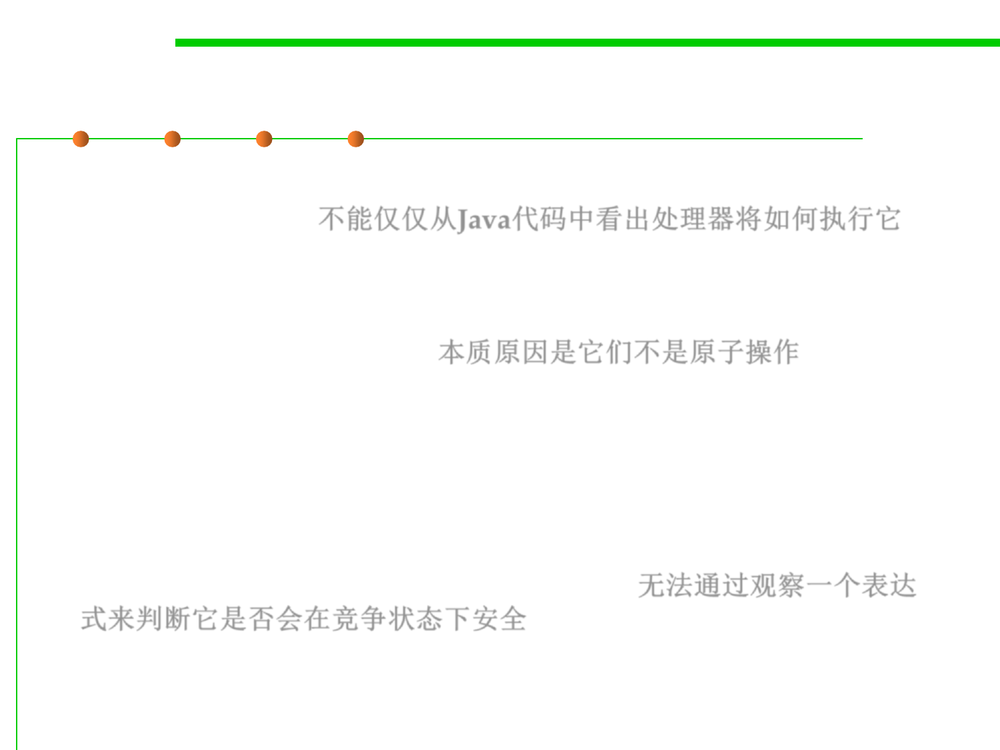

10.1 Concurrency and Thread-Safety
Tweaking the code won’t help 调整代码无济于事
▪ You can’t tell just from looking at Java code how the processor is
going to execute it.不能仅仅从Java代码中看出处理器将如何执行它
balance += 1;
The problem is that these are not atomic operations. The instruction
might be processed as follows: 本质原因是它们不是原子操作
1. Load balance into a register.
2. Add 1.
3. Move the result back to balance.
▪ The key lesson is that you can’t tell by looking at an expression
whether it will be safe from race conditions 无法通过观察一个表达
式来判断它是否会在竞争状态下安全